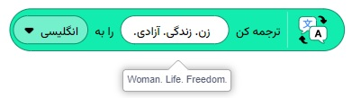
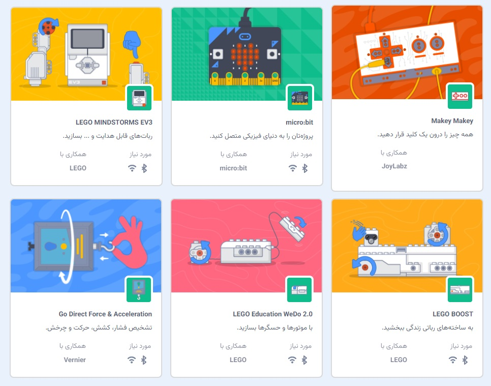
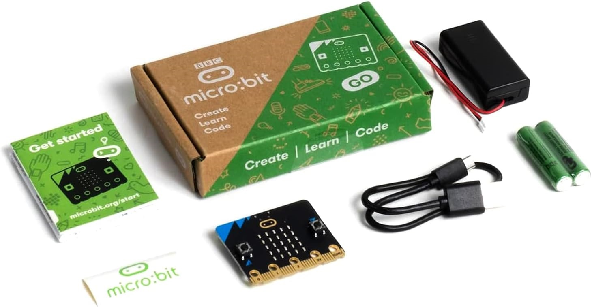

در این مقاله قصد دارم که شما را با افزونههای زبان برنامه نویسی اسکرچ آشنا کنم و مخاطب اصلی این مقاله، معلمین اسکرچ هستند.
افزونه چیست؟
به صورت کلی یک افزونه یعنی چیزهایی که قابلیتهای بیشتری را در اختیار برنامه نویس قرار میدهند. در واقع هر زبان برنامه نویسی شامل گروهی از دستورهای اصلی مانند (شرطها، حلقهها، تعریف و تغییر متغیرها) است. اما گاهی برنامه هایی را میخواهیم بنویسیم که این دستورات اصلی جوابگوی آن نیستند و به دستورات و امکانات جدیدی نیاز داریم و در اینجا از افزونهها استفاده میشود.

در واقع یک افزونه یعنی دستورات و امکانات جدیدی که ما به یک پروژه اسکرچ اضافه میکنیم تا بتوانیم کارهای بیشتری را با اسکرچ انجام دهیم.
در سایر زبانهای برنامه نویسی مانند پایتون و ++C هم چیزی مانند افزونههای اسکرچ را داریم که البته در این زبانهای از واژههایی مانند «ماژول»، «کتابخانه» و یا «پکیج» به جای افزونه استفاده میکنیم.
در اسکرچ برای اضافه کردن یک «افزونه» از دکمه «اضافه کردن افزونه» که در سمت راست پایین ویرایشگر فارسی شده اسکرچ است، استفاده میکنیم. (در انگلیسی بدیهی است که این دکمه در سمت چپ پایین ویرایشگر است).
پرسش) چرا باید افزونهها را اضافه کنیم و چرا به صورت پیش فرض فعال نشدهاند؟
احتمالا دلیل آن در اسکرچ این است که منوی دستورات اصلی اسکرچ شلوغ نشوند زیرا برخی از این افزونهها نیاز به اینترنت و یا سخت افزار خاصی دارند که بدیهی است که اکثر دانش آموزان همواره به آنها دسترسی و یا احتیاج ندارند.
اما علاوه بر این، در زبان پایتون و یا ++C اضافه کردن کتابخانهها باعث میشوند که همه کدهای آن کتابخانه در پروژه اضافه شوند و بنابراین در هنگام اجرا/تفسیر/ترجمه، زمان بیشتری را خواهند گرفت، حافظه و احتمالا CPU بیشتری را این افزونهها خواهند گرفت.
افزونه «موسیقی» اسکرچ
نیازمندیها: اسپیکر (بلندگو) - آشنایی با مفاهیم ابتدایی موسیقی
با اضافه کردن این افزونه در اسکرچ، شما میتوانید صدای ۱۸ ساز مختلف (مانند پیانو، گیتار و ...) و نتهای موسیقی آن (دو - ر - می - ....) را تولید، ترکیب و پخش کنید. بدیهی است که برای کار با این افزونه نیاز است که کامپیوتر دارای اسپیکر باشد.
معمولا ما ترجیح میدهیم که یک آهنگ را خودمان نسازیم و از آهنگهای ساخته شده در پروژه (با دستورات گروه صدا) استفاده کنیم. بنابراین این افزونه از نظر اینجانب برای همه دانش آموزان کاربردی نیست.
افزونه «قلم» اسکرچ
نیازمندیها: به چیز خاصی نیاز ندارد.
با دستورهای افزونه قلم، میتوانیم در اسکرچ شکلهای ساده تا بسیار پیچیده (مانند رسم نمودار یک معادله ریاضی) را رسم کنیم.
باید بدانید که در حدود ۶۰ سال گذشته که کامپیوترها بسیار ساده بودند، برای آموزش مفاهیم برنامه نویسی به بچهها، یک لاکپشت بوده که باید بچهها به لاکپشت دستورهایی را میدادند تا حرکت کند و در مسیر حرکتش یک خط رسم میشده است. این زبان برنامه نویسی LOGO نام داشت (اینجا را ببینید) و تقریبا این اصول (یعنی لاک پشتی که خط میکشد) تا سالها یکی از جذابترین روشهای آموزش برنامه نویسی به بچهها میماند و حتی در زبان برنامه نویسی پایتون هم به صورت یک ماژول به نام Turtle اضافه شده است.
بنابراین این روش در اسکرچ هم Turtle باقی مانده است و به صورت افزونه «قلم» درآمده است.
توجه داشته باشید که این روش آموزش در مقایسه با کارهای بسیار جذاب، جالب که میتوان در اسکرچ انجام داد، قدیمی است و به همین دلیل اینجانب توصیه نمیکنم و فقط در موارد خاصی (مانند تدریس مختصات و ...) معلم میتواند این افزونه را تدریس کند.
افزونه «تشخیص ویدئویی» اسکرچ
نیازمندیها: وب کم
برای این افزونه کامپیوتر شما باید وب کم داشته باشد و یا از لپ تاپی که وب کم دارد استفاده کنید. این افزونه میتواند «جهت» و «سرعت» چیزی که جلوی وب کم حرکت میکند را تشخیص دهد. مثلا اگر دستتان را تکان دهید متوجه سرعت و جهت حرکت دست خواهد شد.
برای بچهها نوشتن چنین برنامهای بسیار جذاب است زیرا میتوانند با دنیای واقعی و فیزیکی از درون کامپیوتر کار کنند. برای آشنایی با این افزونه کارت «بازی و تشخیص ویدئو با وب کم در اسکرچ» را مطالعه و تمرین کنید.
همچنین در ۱ میلیارد پروژه موجود در سایت اسکرچ هم میتوانید کدهای جالب دیگری را بیابید.
افزونه «متن به گفتار»
نیازمندیها: اینترنت
با این افزونه یک متن به گفتار تبدیل میشود یعنی آن متن توسط کامپیوتر برای ما خوانده میشود. این کار توسط اتصال به سرویسهایی است که شرکت آمازون از طریق اینترنت در اختیار پروژه اسکرچ شما میگذارد و بنابراین برای استفاده از این افزونه باید به اینترنت متصل باشد.
متاسفانه این افزونه از زبان فارسی پشتیبانی نمیکند یعنی نمیتواند متنهای فارسی را برای ما بخواند! (احتمالا این موضوع به دلیل تحریمها است.)
افزونه «ترجمه» اسکرچ
نیازمندیها: اینترنت
یکی از ایدههای وب سایت اسکرچ، ایجاد جامعه (گروهی) از افراد است که در سراسر جهان پروژههایی را بسازند و به اشتراک بگذارند و بچهها میتوانند با این افزونه پروژههای بسازند که چند زبانه باشد و تمامی متنهای پروژه به زبان دیگری (مثلا از انگلیسی به ژاپنی) ترجمه شوند.
این کار توسط اتصال به سرویسهایی است که شرکت گوگل از طریق اینترنت در اختیار پروژه اسکرچ شما میگذارد و بنابراین برای استفاده از این افزونه باید به اینترنت متصل باشد.
خوشبختانه این افزونه از زبان فارسی پشتیبانی میکند یعنی میتوانیم متنی را از فارسی به هر زبانی و یا از هر زبانی به فارسی ترجمه کنیم!
معرفی افزونههای سخت افزاری اسکرچ
برای آموزش کار با دنیای واقعی و فیزیکی به دانش آموزان، سخت افزارهایی خاصی ساخته شده است و برای ارتباط با هر یک از این سخت افزارها، یک افزونه در اسکرچ وجود دارد. برخی از این سخت افزارهای رباتهای سادهای هستند و برخی دیگری (مانند میکروبیت) فقط یک برد کوچک الکترونیکی است.
باید این سخت افزارها خریداری شوند و سپس به کامپیوتر وصل میشوند و بعد از آن میتوانیم با این سخت افزارها کار کنیم.
متاسفانه بجز میکروبیت، هیچ یک از این سخت افزارها در ایران تا آنجا که من اطلاع دارم، قابل خریداری نیست و باید از خارج از ایران سفارش و خریداری شود.
قیمت این سخت افزارها:
 | Make Monkey Classic قیمت: ۴۹ یورو |
|  | Micro:bit قیمت: ۲۵ دلار آمریکا |
 | Go Direct Force and Acceleration Sensor قیمت: ؟ |
توجه: سخت افزارهای شرکت LEGO ظاهرا دیگر تولید نمیشوند (قدیمی محسوب میشود) و برخی از سخت افزارهای جدیدتر شرکت LEGO، یک نرم افزار و محیط برنامه نویسی خاص خودم (که تقریبا شبیه اسکرچ جونیور است) را دارد.
معرفی سخت افزار «میکرو بیت»
من خودم این سخت افزار (نسخه ۱ ) آن را دارم و تست کردهام و باید بدانید که به جهات مختلفی یکی از بهترین گزینهها برای تهیه است.
این سخت افزار کوچک است (در جیب جا میشود) و تولید شرکت بزرگ مایکروسافت است و به همین دلیل از نظر فنی و تکنولوژی بسیار بالاست. به سادگی به اسکرچ وصل میشود و هیچ مشکلی در اتصال آن با اسکرچ نیست .